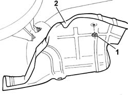
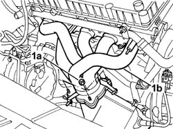
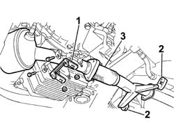
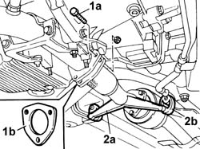
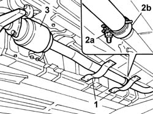

1076B10 Exhaust PIPE assembly - R.R.
- Path
- Procedures > 10 ENGINE > 1076 EXHAUST PIPES AND SILENCERS > 1076B EXHAUST PIPES AND SILENCERS > 1076B10 Exhaust PIPE assembly - R.R.
- Kind
- repair procedure (removal / refitting; the operation number is the code)
- Applies to
- engines: 2.0 TB, 2.4 20V; all production periods
- Interactive page
- https://sloeber94.github.io/elrnDB-lThss/en/#/93915
Applies to: engines: 2.4 20V; all production periods
 Removing
Removing
 Refitting
Refitting- Position the vehicle on a lift.
- Disconnect the negative battery lead.
See in Op. 7040D50 ENGINE COMPARTMENT UPPER SOUND INSULATION SHIELD - R.R.
See in Op. 1048A28 vacuum air circuit resonator pipe - r+r
See in Op. 1048A21 AIR INLET HOSE FROM INTAKE TO FILTER - R.R.
See in Op. 1048A23 Cold AIR INTAKE for air filter - R.R.
See in Op. 1016A40 Ignition COIL COVER on cylinder head - R.R.
- Raise the vehicle.
See in Op. 7055B54 PROTECTION/GUARD under engine - R.R.
See in Op. 1048A10 COMPLETE AIR FILTER -R.R.
See in Op. 1072C44 Exhaust manifold heat shield on BULKHEAD - R.R.
See in Op. 1076B20 Rear exhaust SILENCER - R.R.
1. Disconnect the electrical connection for the front Lambda sensor.
 | Description | Connector |
|---|---|---|
1 | Lambda sensor on catalyzer | K017 |
2. Disconnect the electrical connection for the rear Lambda sensor.

Applies to: engines: 2.4 20V; all production periods
1. Undo the nuts (1a) fixing the catalytic converter to the exhaust manifold (1b).

Applies to: engines: 2.4 20V; all production periods
- Raise the vehicle on the lift.
1. Remove the catalytic converter mounting bracket.
2. Release the pins from the rubber mountings on the bodyshell.
3. Lower the exhaust pipe, complete with catalytic converter, and remove it.

Applies to: engines: 2.4 20V; all production periods
Refitting
Removing- Position the exhaust pipe, complete with catalytic converter, and fit the pins for the front section in the rubber mountings.
- Fit the catalytic converter mounting bracket.
 | Value - daNm | Fastening | Component | Ø |
|---|---|---|---|---|
. | (on engine oil sump) 4 | Nut | CATALYTIC CONVERTER MOUNT | M10 X 1.25 |
| Value - daNm | Fastening | Component | Ø |
|---|---|---|---|---|
. | (to catalytic converter) 2.8 | Bolt | CATALYTIC CONVERTER MOUNT | M8 |
- Lower the vehicle on the lift.
- Position the gaskets between the catalytic converter and the exhaust manifold.
- Tighten the nuts fixing the catalytic converter to the exhaust manifold.
| Value - daNm | Fastening | Component | Ø |
|---|---|---|---|---|
. | 2.8 | Nut | CATALYTIC CONVERTER (ONE) | M8 |
- Connect the electrical connection for the rear Lambda sensor.
- Connect the electrical connection for the front Lambda sensor.
| Description | Connector |
|---|---|---|
. | Lambda sensor on catalyzer | K017 |
See in Op. 1076B20 Rear exhaust SILENCER - R.R.
See in Op. 1072C44 Exhaust manifold heat shield on BULKHEAD - R.R.
See in Op. 1048A10 COMPLETE AIR FILTER -R.R.
See in Op. 1016A40 Ignition COIL COVER on cylinder head - R.R.
See in Op. 1048A23 Cold AIR INTAKE for air filter - R.R.
See in Op. 1048A21 AIR INLET HOSE FROM INTAKE TO FILTER - R.R.
See in Op. 1048A28 vacuum air circuit resonator pipe - r+r
- Connect the negative battery lead.
See in Op. 0010T20 Engine REFRIGERANT FLUID - Change
- Raise the vehicle on the lift.
See in Op. 7055B54 PROTECTION/GUARD under engine - R.R.
See in Op. 7040D50 ENGINE COMPARTMENT UPPER SOUND INSULATION SHIELD - R.R.
- Remove the vehicle from the lift.
Applies to: engines: 2.0 TB; all production periods
Removing
Refitting- Position the vehicle on a lift.
See in Op. 1076B20 Rear exhaust SILENCER - R.R.
1. Undo the bolts (1a) fixing the catalytic preconverter to the centre section of the exhaust pipe and keep the gasket (1b).
2. Release the pins (2a) from the pipe rubber mountings (2b).

Applies to: engines: 2.0 TB; all production periods
1. Undo the fixing bolts and remove the protective brackets fastened to the underbody.
2. Undo the bolt (2a) fixing the metal collar (2b) connected to the rear silencers.
3. Release and remove exhaust pipe, complete with catalytic converter.

Applies to: engines: 2.0 TB; all production periods
Refitting
Removing- Join the rear silencers to the exhaust pipe using the metal band.
- Tighten the bolt fixing the metal collar.
| Value - daNm | Fastening | Component | Ø |
|---|---|---|---|---|
. | 4.5 | - | REAR SILENCER EXHAUST | M10X1.25 |
- Position the brackets and tighten the fixing bolts.
- Secure the pins to the rubber mountings.
- Position the gasket.
- Tighten the bolts fixing the catalytic preconverter to the centre section of the exhaust pipe.
| Value - daNm | Fastening | Component | Ø |
|---|---|---|---|---|
. | 2,8 | Bolt | CATALYTIC PRE-CONVERTER | M8 |
See in Op. 1076B20 Rear exhaust SILENCER - R.R.
- Remove the vehicle from the lift.
Topics linked from this page (10)
- 0010T20 Engine REFRIGERANT FLUID - Change
- 1016A40 Ignition COIL COVER on cylinder head - R.R.
- 1048A10 COMPLETE AIR FILTER -R.R.
- 1048A21 AIR INLET HOSE FROM INTAKE TO FILTER - R.R.
- 1048A23 Cold AIR INTAKE for air filter - R.R.
- 1048A28 vacuum air circuit resonator pipe - r+r
- 1072C44 Exhaust manifold heat shield on BULKHEAD - R.R.
- 1076B20 Rear exhaust SILENCER - R.R.
- 7040D50 ENGINE COMPARTMENT UPPER SOUND INSULATION SHIELD - R.R.
- 7055B54 PROTECTION/GUARD under engine - R.R.